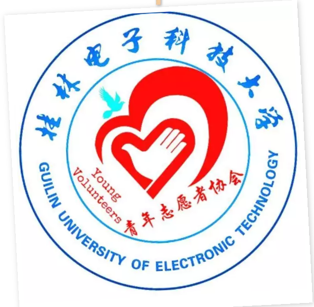

社团介绍
桂电志愿者网 日期：2015-08-02 来源： 桂电青协

一、主席团
（1）主席
总理整个社团的发展工作以及活动的审批工作，统筹决定社团的发展方向。对协会负责。主要的职责是全面负责本协会工作。做好每年一度的工作计划，制定每学期的工作安排。检查个部门工作情况，及时总结本协会的工作，定期主持召开协会全体干部、会员会议。研究本协会的工作发展方向。具有政策制定、人事任命、活动策划的最终决定通过权。
(2）副主席
对分管部门的工作职责进行监督，督促完成；对协会项目活动的开展与完成进行策划、分工、指导、监督；协助主席处理好协会日常事务；协助主席完成好本年度工作计划；主席不在，受主席委托代行主席职权，处理协会事务。对主席负责，主要的职责是分管本协会的一定部门，主动配合主席搞好各项工作。当好主席决策参谋，并对主席做出的决策进行讨论通过。指导各部门开展工作，为他们解决实际问题，并及时把各部门的有关情况反馈给主席。认真协调好各部门之间的关系，并加强对分管干部的传、帮、带工作。
（3）秘书长
1. 完成理事考勤评优工作；
2. 做好协会每次活动的工作经验总结；
3. 配合主席做好协会年度工作计划，并督促执行；
4. 管理协会重要文件，贯彻执行协会各项规章制度；
（4）团支书（视当届各部门具体情况决定是否设立。）
1. 负责协会团员思想状况的考察和引导，团建工作；
2. 配合校团委在会员中进行党团知识的教育；
3. 传达贯彻团委的指示和决议；
4. 制定并督促完成年度团的工作计划；
5. 做好协会各类争先创优工作，五四评优系列工作。
（5）团支部（视当届各部门具体情况决定是否设立。）
1. 协助好团支书开展工作；
2. 向党组织推荐优秀团员作为党的发展对象；
3. 主动关心支部每一个团员青 年的成长进步；
4. 做好团员的组织发展和教育管理工作；
5. 每学期组织开展团日活动。
二、秘书部
1. 配合团支书做好社团一年一度的社团评优；
2. 积极倾听会员心声，将下层意见反映给主席团成员；
3. 整理会员信息，做好每次活动与会员的沟通传达工作；
4. 做好各项会议的通知、记录；按时整理协会活动文字材料、图片材料；
5. 保管好协会会旗、会帽、奖牌证书等物品
6. 与技术部、新媒体部共同管理协会网盘。
【责任编辑：桂电青协】